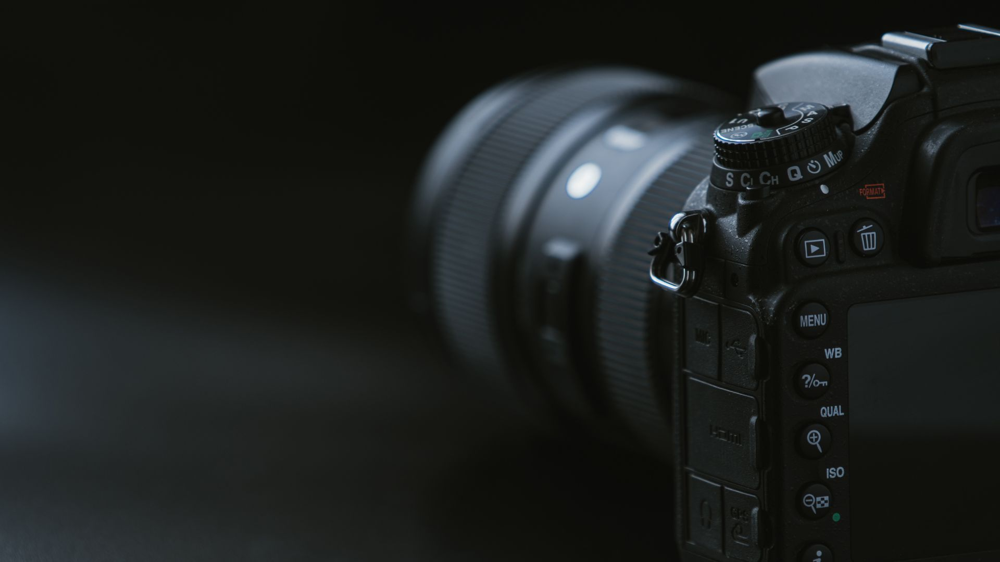

Photography is one of the most powerful forms of visual communication in the modern world. It is the art, science, and practice of creating images by recording light through a camera. Since its invention in the 19th century, photography has evolved from a complex scientific process into an accessible and widely used medium. Today, almost everyone carries a camera in their smartphone, making photography an integral part of daily life. Photography allows people to preserve memories, document events, express creativity, and communicate ideas. From family celebrations and travel experiences to journalism and scientific research, photography plays a vital role in many aspects of society. It captures moments that can never be repeated and transforms them into lasting memories. The word "photography" comes from the Greek words "photo," meaning light, and "graphy," meaning drawing or writing. Therefore, photography literally means "drawing with light." Light is the fundamental element of photography because every photograph is created by capturing and controlling light. The history of photography dates back to the early 1800s. Before the invention of cameras, artists used a device called the Camera Obscura, which projected an image onto a surface. This concept laid the foundation for modern photography. In 1826, Joseph Nicéphore Niépce created the world's first permanent photograph using a process known as heliography. Later, Louis Daguerre developed the daguerreotype process, which significantly improved image quality and reduced exposure times. Throughout the 19th and 20th centuries, photography underwent major advancements. Film cameras became popular, allowing photographers to capture multiple images on a single roll of film. Companies such as Kodak made photography accessible to the general public. The digital revolution transformed photography in the late 20th century. Digital cameras replaced traditional film cameras, enabling instant image preview and storage. Today, mirrorless cameras, DSLR cameras, and smartphones have made photography more convenient and powerful than ever before. Importance of Photography Photography is important for many reasons. It helps preserve memories, communicate information, and document history. A single photograph can tell a story that words sometimes cannot express. Photography plays a significant role in journalism by documenting important events and informing the public. Historical photographs provide valuable insights into past societies, cultures, and events. In business and marketing, photography is used to promote products and services. High-quality images attract customers and influence purchasing decisions. Social media platforms have further increased the importance of visual content, making photography an essential skill for individuals and organizations alike. Photography also serves as a form of personal expression. Photographers use composition, lighting, and perspective to convey emotions and ideas. Through photography, people can share their unique view of the world. Photography encompasses various genres, each with its own techniques and objectives. 1. Portrait Photography Portrait photography focuses on capturing the personality, emotions, and expressions of individuals or groups. It is commonly used for professional headshots, family portraits, and fashion photography. 2. Landscape Photography Landscape photography captures natural environments such as mountains, forests, rivers, and sunsets. Photographers often use wide-angle lenses to showcase the beauty and scale of nature. 3. Wildlife Photography Wildlife photography involves photographing animals in their natural habitats. It requires patience, skill, and specialized equipment such as telephoto lenses. 4. Street Photography Street photography captures everyday life in public places. It often focuses on candid moments and human interactions. 5. Sports Photography Sports photography aims to capture action and movement during sporting events. Fast shutter speeds are essential to freeze motion and produce sharp images. 6. Macro Photography Macro photography involves taking close-up photographs of small subjects such as insects, flowers, and textures. It reveals details that are often invisible to the naked eye. 7. Fashion Photography Fashion photography is used to showcase clothing, accessories, and beauty products. It combines creativity, styling, and professional lighting techniques. 8. Product Photography Product photography is widely used in advertising and e-commerce. High-quality product images help businesses attract customers and increase sales. 9. Event Photography Event photographers document occasions such as weddings, birthdays, corporate events, and concerts. Their goal is to capture important moments and emotions. 10. Architectural Photography Architectural photography focuses on buildings and structures. Photographers emphasize design, symmetry, and spatial relationships. Basic Components of a Camera Understanding camera components is essential for effective photography. Lens The lens focuses light onto the camera sensor. Different lenses provide different perspectives and levels of magnification. Sensor The sensor captures light and converts it into a digital image. Larger sensors generally produce better image quality. Shutter The shutter controls how long light reaches the sensor. Faster shutter speeds freeze motion, while slower speeds create motion blur. Aperture Aperture refers to the opening inside the lens that controls the amount of light entering the camera. It is measured in f-stops such as f/2.8, f/4, and f/8. ISO ISO determines the sensor's sensitivity to light. Higher ISO settings are useful in low-light situations but may introduce image noise. Exposure Triangle The exposure triangle consists of three fundamental settings: Aperture A larger aperture (smaller f-number) allows more light and creates a shallow depth of field. A smaller aperture increases depth of field and keeps more of the scene in focus. Shutter Speed Shutter speed controls the duration of exposure. Fast shutter speeds freeze action, while slow shutter speeds capture motion effects. ISO ISO adjusts sensitivity to light. Low ISO produces cleaner images, while high ISO helps in darker environments. Balancing these three elements is essential for achieving proper exposure. Composition Techniques Composition refers to the arrangement of visual elements within a photograph. Rule of Thirds The frame is divided into nine equal sections. Placing subjects along these lines creates a balanced composition. Leading Lines Roads, rivers, and pathways guide the viewer's eye toward the main subject. Symmetry Symmetrical compositions create harmony and visual appeal. Framing Natural elements such as windows, doors, and trees can be used to frame the subject. Depth Including foreground, middle ground, and background elements adds depth and dimension to photographs. Lighting in Photography Lighting is one of the most critical aspects of photography. Natural Light Sunlight provides a versatile and accessible light source. The golden hour, shortly after sunrise and before sunset, offers soft and warm lighting. Artificial Light Artificial lighting includes studio lights, flashes, and LED panels. These tools provide greater control over illumination. Soft Light Soft light reduces shadows and creates smooth transitions, making it ideal for portraits. Hard Light Hard light creates strong shadows and dramatic effects. Understanding light direction, intensity, and color temperature helps photographers create compelling images. Digital Photography and Editing Digital photography allows photographers to review and edit images instantly. Editing software enhances photographs by adjusting exposure, contrast, color balance, and sharpness. Popular editing software includes: Adobe Photoshop Adobe Lightroom Capture One GIMP Snapseed Photo editing should enhance an image while maintaining its authenticity. Excessive editing can result in unnatural appearances. Photography in Social Media Social media platforms have transformed photography into a global form of communication. Applications such as Instagram, Facebook, and Pinterest allow photographers to share their work with millions of users. Content creators use photography to build personal brands and engage audiences. High-quality visual content often receives greater attention and interaction than text-based posts. Photography has also created new career opportunities, including influencer marketing, content creation, and digital advertising. Career Opportunities in Photography Photography offers diverse career paths, including: Professional Photographer Wedding Photographer Fashion Photographer Wildlife Photographer Sports Photographer Photojournalist Commercial Photographer Product Photographer Travel Photographer Photography Instructor Successful photographers combine technical knowledge with creativity and business skills. Challenges in Photography Photography presents several challenges: Managing different lighting conditions. Capturing fast-moving subjects. Choosing appropriate camera settings. Maintaining equipment. Competing in a highly competitive industry. Developing a unique artistic style. Overcoming these challenges requires continuous learning and practice. Future of Photography The future of photography is closely linked to technological advancements. Artificial Intelligence (AI), computational photography, and advanced image processing are transforming how photographs are captured and edited. Smartphones now feature multiple cameras, night modes, and AI-powered enhancements. Drone photography has opened new perspectives for landscape and aerial imaging. Virtual reality and augmented reality technologies may further expand the possibilities of visual storytelling. Despite technological changes, the core purpose of photography remains the same: capturing meaningful moments and sharing experiences. Conclusion Photography is much more than simply taking pictures. It is a powerful medium for storytelling, communication, creativity, and documentation. From preserving personal memories to recording historical events, photography influences how people understand and remember the world around them. The development of digital technology has made photography more accessible than ever before, enabling individuals from all backgrounds to explore and express their creativity. Whether practiced as a hobby or pursued as a profession, photography offers endless opportunities for learning and artistic growth. As technology continues to evolve, photography will remain an essential part of human culture, helping people capture moments, share stories, and connect with others across the globe. Through the lens of a camera, ordinary scenes can become extraordinary memories, demonstrating the timeless power of photography.